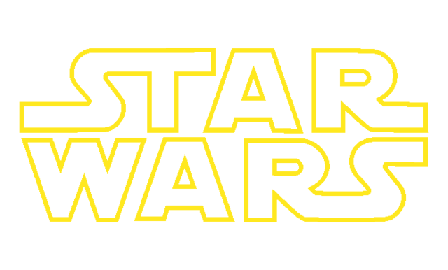
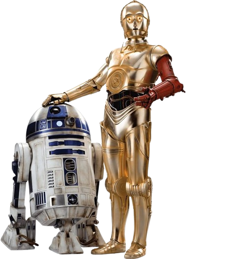
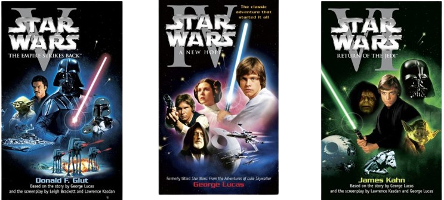
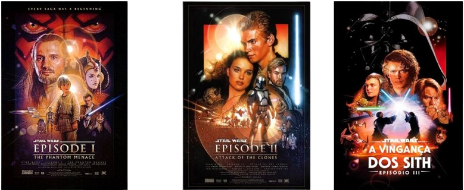
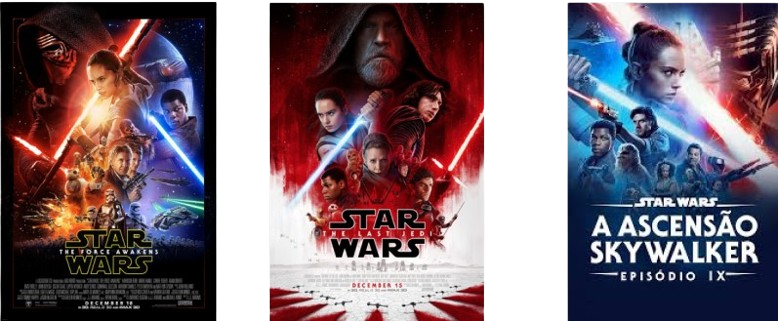
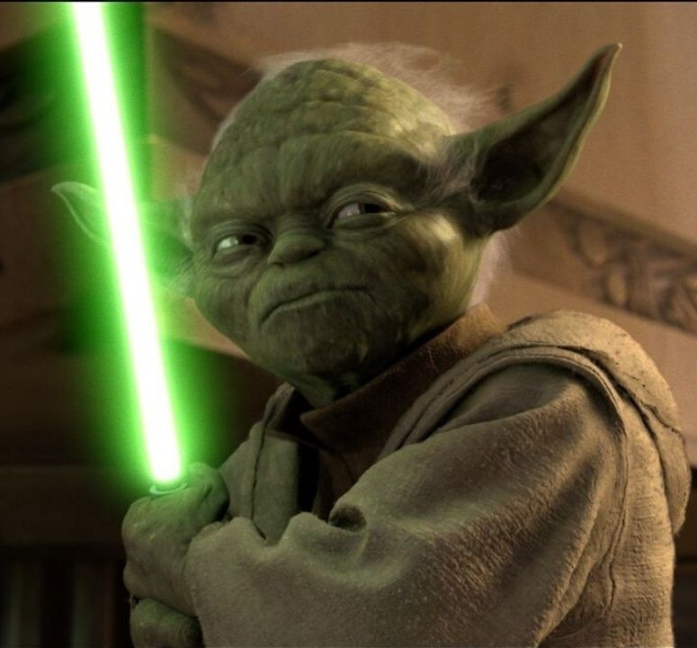

 (ou Guerra nas Estrelas), é uma franquia de mídia de ópera espacial criada por George Lucas. A saga é
composta por filmes, séries de televisão, livros, jogos e muito mais, criando um universo ficcional
abrangente e popular.
A história de Star Wars foi contada de forma não cronologica, pois George Lucas
optou por começar com o primeiro filme, "Uma Nova Esperança", para introduzir a história e criar
interesse no público, assim maximizar o impacto da revelação de que Darth Vader é pai de Luke Skywalker,
sendo um dos maiores plot twist do cinema, além que a produção do primeiro filme cronologico
( Star Wars: Episódio I – A Ameaça Fantasma) não era possivel devido à tecnologia da época, o que
permitiu que a história fosse contada de forma mais fácil e econômica, tendo ao total 3 triologias,
trilogia I (Episódios IV, V e VI), a trilogia II (Episódios I, II e III) e a III (Episódios VII, VIII
e IX), somando 9 filmes.

Filmes
TRILOGIA I

TRILOGIA II

TRILOGIA III

Força
SEGUNDO MESTRE YODA

SEGUNDO MESTRE QUI-GON JINN